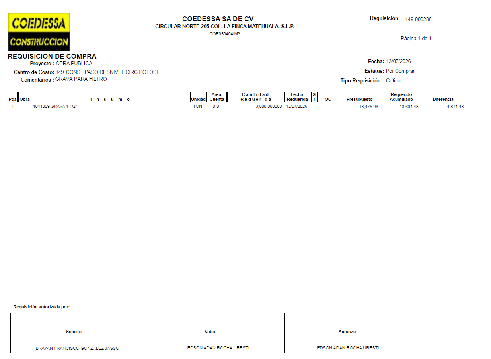

Antes de empezar
Esta lección sirve para material pétreo y de corte: ambos se crean desde la misma pantalla. El tipo lo define el material que elijas; el único paso que cambia es la Requisición (paso 5), que solo aparece para material pétreo.
Como residente, tu trabajo es dar de alta el vale. El operador, el vehículo y los viajes se asignan después desde la sección Acarreos (eso lo hace el checador).
Abre "Nuevo vale" y elige Material
- Entra a la app e inicia sesión con tu cuenta.
- Toca el botón para crear un nuevo vale.
- En la pantalla de tipo de vale, elige Material.
Video: elegir tipo "Material"
Selecciona la Obra
- En Datos de Vale, abre el selector de Obra y elige la obra correcta.
- La Empresa se llena sola según la obra que elegiste: no tienes que escribirla.
Video: seleccionar obra
Elige Material y Banco
- Abre el selector de Material y elige el que se moverá. Aquí se decide si el vale es pétreo o de corte: depende del material que selecciones.
- Abre el selector de Banco de material y elige de dónde sale el material.
Video: material y banco
Elige Sindicato (la Distancia se llena sola)
- Abre el selector de Sindicato y elige el sindicato. Normalmente es CTM; pero si el camión es de la empresa o interno, usa Grupo GEEM.
- La Distancia se calcula sola según el banco y la obra. Si aparece vacía, avisa al administrador para que registre esa distancia.
Video: sindicato y distancia
Captura la Requisición
- Si elegiste un material pétreo (por ejemplo base hidráulica, arena o grava), aparecerá el campo Requisición. Es obligatorio: escribe su folio (ej. REQ 149-00020).
- Si tu material es de corte (producto de excavación, como tepetate, escombro o basura), este campo no aparece: salta directo al paso 6.
¿Qué es una requisición?
Una requisición de compra es el documento con el que la obra solicita y autoriza el material. Trae un folio en la parte superior derecha: ese folio es el que escribes en el campo Requisición.

Video: requisición (material pétreo)
Cantidad de vales y crea el vale
- Si ese día necesitas varios vales iguales, ajusta la Cantidad de vales para crearlos en lote.
- Cuando todo esté listo, toca Crear Vale.
Video: cantidad de vales + Crear Vale
¡Listo! Vale creado
Verás un mensaje de "Vale creado" con su folio. El operador y el vehículo quedan pendientes: se asignan después desde Acarreos. Toca Ir a Acarreos para continuar.
Volver a la guía